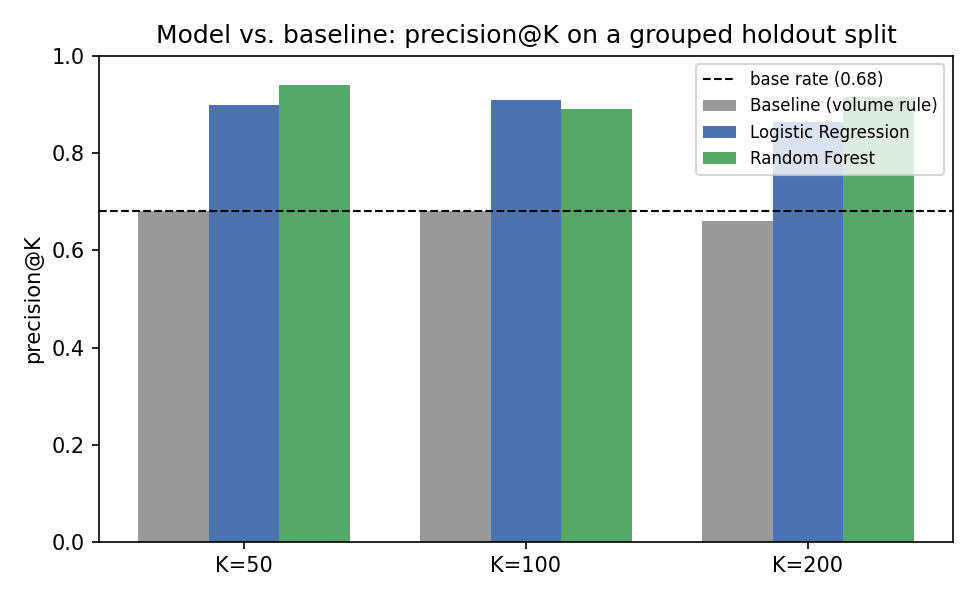
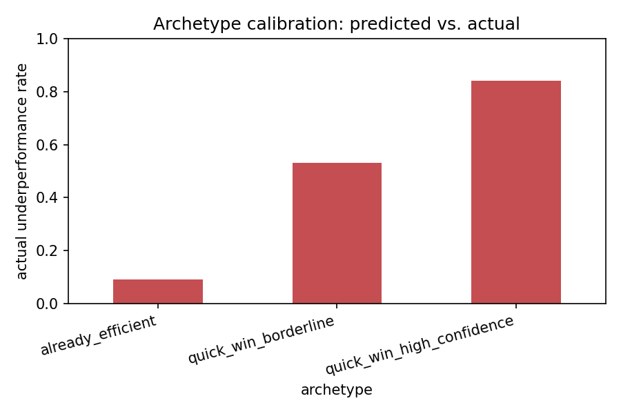
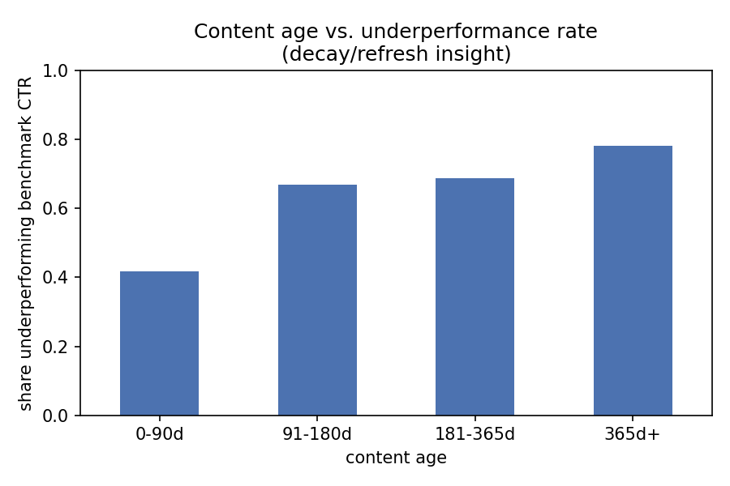

FlyRank ML Internship — Capstone Research
Abstract
FlyRank's own product flags pages for review with hand-tuned SQL rules like is_quick_win —
a shorthand for "close to page 1, gets a lot of traffic, fix it first." Using 30,000 rows of real
90-day SEO performance data, restricted to that same slice of near-page-1, high-demand pages, I tested
whether a rule shaped like that flag actually finds pages that are genuinely underperforming their own
position's benchmark click-through rate. It doesn't: ranked by volume alone, precision sits within a
few points of chance. A logistic regression and a random forest, trained on content and engagement
signals instead of volume, and validated on a client-grouped holdout split, lift precision@50 from 0.68
to as high as 0.94. The output is a reviewed, human-in-the-loop action queue with explicit
no-automation rules, not a replacement for FlyRank's flag or a live pipeline.
Precision@50 for finding genuinely underperforming near-page-1 pages: a volume-only baseline (0.68, barely above the 0.68 base rate) vs. a random forest trained on content and engagement signals (0.94), both measured on the same client-grouped holdout split.
A common content-ops shortcut treats "close to page 1, gets a lot of impressions" as the review queue for SEO fixes. It's an easy rule to write and easy to defend — bigger pages, bigger upside. But volume says nothing about whether a page is actually broken. A page can sit at position 6 with huge impressions and a perfectly healthy click-through rate; ranking it above a smaller page that's quietly underperforming wastes a reviewer's time on the wrong candidate.
This paper asks a narrower, checkable question: among pages already close to page 1 with real search demand behind them, which ones are genuinely underperforming their position's own benchmark click-through rate — and can a model that reads content and engagement signals find them better than a rule that only reads impression volume? The answer supports one decision: what a content team reviews first next Monday.
This isn't an abstract exercise. FlyRank's live app already makes exactly this kind of call for real
content teams — hand-tuned SQL rules compute flags like health_score,
needs_ctr_fix, is_quick_win, and a combined priority_score that
decide which pages a team sees at the top of their queue each week. is_quick_win, in
particular, is shaped around exactly the volume-first logic this paper tests: a page close to page 1
with a lot of traffic gets flagged as a quick win, on the assumption that size alone means it's worth
fixing.
A team only has so many review-hours a week. If a flag built on volume alone is only as good as chance at finding pages that are actually broken, half of that limited review time goes to pages that didn't need it — while genuinely underperforming pages with smaller (but real) audiences wait. That's the operational stakes behind the number in the box above.
The analysis uses the anonymized FlyRank ML Internship starter release
(content_refresh_anonymized.csv) — 30,000 content rows, each with trailing 90-day search
performance (impressions, clicks, engagement) and static content attributes (word count, competition,
content type, search intent), pseudonymously keyed by client and content ID.
The analysis lane is restricted to 12,701 rows
(42.3% of the release) — pages at position 4-20 (page_1 or
striking distance) with at least moderate search demand
(impression_tier ≥ moderate). The remaining 57.7% — deep pages or pages with
no meaningful demand — is out of scope for this lane by design, not by omission.
ctr and clicks_90d — these define the label; using them as inputs would be circular.trend_direction and trend_pct, and the 30-day comparison windows beneath them — label-derived conventions, excluded regardless of lane.provider_used / model_used — flagged in the source data dictionary as not model features.No client names, raw search queries, or URLs appear anywhere in this work; the source release's IDs are already anonymized hashes.
A candidate is labeled 1 if its own click-through rate falls below the
demand-weighted CTR benchmark for the page_1+striking pool combined
(sum(clicks) / sum(impressions), not an average of per-row rates) — an
observed, non-circular target, not a ranking invented after the fact.
Rank candidates by impressions_90d alone — the volume-first rule described in the
introduction. One line of logic, fully transparent, and the number every model below has to beat.
Logistic regression and random forest, trained on 13 numeric and 7 categorical features spanning content attributes (word count, competition, content type, intent), engagement (scroll rate, engagement rate, AI-traffic share), and the position/demand tier the lane is defined by. Both models come from the same toolkit row — "yes/no with an observed label" — with the simpler model trained first so added complexity has to earn its place in the results.
Train/test split via GroupShuffleSplit on client_id (80/20, seed 42) rather
than a plain random split. Different clients have different sites and content styles; a random split
risks letting the model partly recognize a client's house style instead of learning transferable
signal. Zero client overlap between train and test was confirmed directly.
The feature set was checked against known label-source and product-flag columns (none present), and
the evaluation harness itself was verified by deliberately re-introducing ctr as a feature
— AUC jumped to 1.0 as expected, confirming the harness would actually catch a real leak rather than
silently passing one through.
All three rankings were evaluated on the same held-out client split, at the same values of K, with the base rate reported alongside every number below — a precision score means little without it.
| K | base rate | baseline (volume) | logistic regression | random forest |
|---|---|---|---|---|
| 50 | 0.681 | 0.680 | 0.900 | 0.940 |
| 100 | 0.681 | 0.680 | 0.910 | 0.890 |
| 200 | 0.681 | 0.660 | 0.865 | 0.915 |

By ROC-AUC, the picture is more modest: logistic regression scores 0.626 and random forest 0.698 — real but unremarkable discrimination across the whole population. The two metrics tell different, both true stories: the models are not excellent at classifying every candidate, but they are good at separating the extremes, which is exactly what a short review queue needs.
A direct check of the validation design's honesty: refitting the random forest on a plain random split
(ignoring client_id) raised its AUC from 0.698 to 0.758 — a real, if moderate, inflation
from letting the model partly learn client identity instead of generalizable signal. The client-grouped
number above is the one that should be trusted.
Cross-sectional, not causal. This work ranks who looks like an opportunity in one snapshot. It does not claim that fixing a flagged page will produce a specific traffic lift — that claim would need a controlled experiment.
Narrow lane, by design. The model covers 42.3% of the portfolio. It says nothing about deep pages or pages with no meaningful search demand.
Validated on a handful of clients. 23 training clients, 6 held out. A genuinely new client is untested, not just "less certain" — the grouping check above shows client identity carries real, learnable signal if the model is allowed to use it.
Modest discrimination, strong ranking. An AUC of 0.63-0.70 should not be read as "the model explains the data well," even though its precision@K is strong.
One dataset, one split. Numbers above come from a single seed and a single time window; a different sample or a later data pull could move them somewhat.
The random forest's predicted probability sorts every candidate into one of three archetypes, ranked within archetype by probability × impressions_90d — likelihood of being a real opportunity, weighted by the size of the audience that would benefit.
| archetype | probability | action | actual hit rate |
|---|---|---|---|
quick_win_high_confidence | ≥ 0.70 | prioritize for a fix this cycle | 84.0% |
quick_win_borderline | 0.40 – 0.70 | queue for human review | 53.1% |
already_efficient | < 0.40 | no action, monitor only | 9.2% |

Within the lane, underperformance climbs steadily with content age — 41.8% for content under 90 days, rising to 78.3% for content over a year old.

No-go list. Never auto-publish or auto-edit content from this queue. Never treat
already_efficient as grounds to deprioritize or suppress a page. Never act on
quick_win_borderline without a human review — its hit rate sits within three points of a
coin flip. Never present this ranking as a client-facing traffic guarantee.
Every number in this paper is produced by work/notebooks/capstone.ipynb, which reproduces
the full pipeline — lane definition, label, features, grouped split, both models, leakage checks, and
every figure above — from the raw CSV in one run. Random seed 42
throughout.
The full week-by-week trail, in order:
Metrics are committed as receipts at
work/outputs/capstone_metrics.json; the ranked queue CSV regenerates on every run rather
than living in git, by the repo's own data-safety convention.